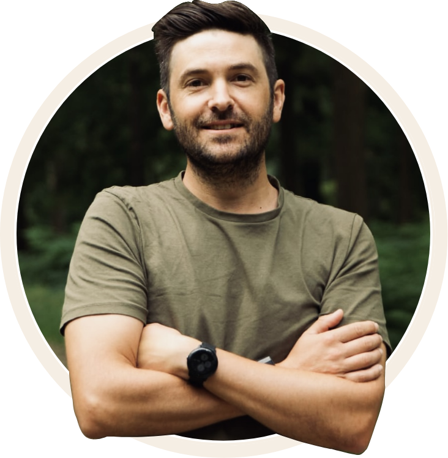

The Founder's Story

It's a Thursday morning, raining and cold in the Netherlands. My wife has left for a trip with my daughter (soon to be 5) for three and a half weeks in South Africa, and I've been left with the responsibility of keeping my boys and I alive over the next three and a half weeks. Tasks I'm not normally used to.
Side note to wife: thanks, love, for always looking after us.
On this early morning I was reflecting on some recent changes we had made in my life. As myself and my youngest son waited on his dyslexia intake assessment, I felt the desire to start writing down some feelings, which are all related to why you are reading this today. So without further ado, here we go.
I've been thinking lately about how I feel about the effects of AI on me and the next steps for doing life. With all the new possibilities and the impact on me as a creative deep thinker, researcher, and slightly ADHD with very heavy signs of dyslexia (self-diagnosed), I've been feeling a mix of emotions lately and I'm trying to put a finger on it. So here are the raw feelings of what I'm experiencing.
Some context on who I am. I grew up in South Africa and life was tough as a kid, growing up with separated parents. My mom had a hard time trying to raise me, but thankfully I had some awesome people in my life who supported and helped me. Even though my high independence pushed them away, my foster parents never stopped loving and supporting me in all my crazy wild ideas. I've always been entrepreneurial from a young age, starting out by asking for carrot seeds for my 11th birthday and a part of my mom's garden to deconstruct in order to start my first business.
It was at this age that I felt different from other kids, in a kind of special way. This is also around the time I first encountered the love of Jesus, although I completely turned away in the years to come, which is another story. At this time my mom was really struggling to hold a job and couldn't really provide for me, and for what I can now see, having my own kids, are the normal standard needs of a child: love, time, play, and so forth. Not to say my real mother and father never loved me. They for sure did. They just couldn't give me these things due to the weight of this world, which I will continue to unpack. That all said, it was around this time that I also met my foster family, who to this day are very much in my life, although I could do more to show them love.
I always felt safe in my mom's deconstructed garden (aka my veggie garden) and felt the presence of the Lord with me, making my time alone never truly alone. I really love my alone time. Many people who know me see me as an extrovert, but I think that's the natural salesman in me, like the 11-year-old boy selling his freshly harvested carrots to the local pubs my mom raised me in. The point is, I actually love to be alone. Not in the sense of without family and loved ones, but just alone with the Lord to process my thoughts and ideas, to feel safe and at peace.
The Lord obviously had other plans for me, as I've been blessed with a busy household with three very loud, outgoing children. So the alone time doesn't come often. Sometimes people think I'm crazy for starting my day at 4:45am every morning, but this is where I find that peace. The alone time, like when I was 11 in the veggie garden.
So how does this all relate to AI and what's next for me? Well, for someone like me who is highly creative, a deep thinker, hyper-focused but also easily distracted, AI does two things, affecting me both positively and negatively. Let's start with the positive.
Given who I am, the developments in AI and AI tooling over the past two years have helped me unlock great opportunities. Since moving to the Netherlands in 2018, I've been working as a UX digital product designer and Microsoft Power Platform consultant, so I've been very much at the forefront of developments, building agents and using AI in every part of my job as a research tool, brainstorming partner, and even for designing complex workflows and solution architecture. AI tooling has been my sidekick, my education tool, helping me go deeper into what I do naturally as a deep thinker. It's even helped me get fairly technical, writing code from Python to CSS, HTML, and JavaScript. I'm at the point now where I'm working across multiple roles, switching hats from functional to technical when needed, from creating plugins to running workshops. I can do it all.
And now with more autonomous agents like Claude Code, writing and deploying code has become a conversation and a collaboration: me making changes and improvements in VS Code while my agent in the same branch takes care of the more complex work. So have I become more productive? Yes. Have I become better at my job? Yes. Have I grown my skill sets? Yes. But this also comes at a massive cost, and here is the negative part I'm trying to work through.
Lately I find myself waking up at 1:00am, head racing with ideas and use cases. I feel so overwhelmed with the number of opportunities that AI tooling brings, and the possibilities of what I could do, that my very soul feels shaken. I've noticed my focus has changed. I still have the ability to hyper-focus, which means I can sit down for a 12-hour session, forgetting to eat or drink. But my short-term focusing has decreased, meaning I don't fully let myself slow down to process. It's like I've become a hyper-rushed person and I feel it in my stomach, like if I don't hurry through it I'm going to miss out.
I'm not sure how to express this feeling too well, but basically it's like I'm not sure if all this technology is making me more ADHD. I mean, I do have at minimum 30 to 60 tabs open, and I constantly find myself switching between multiple contexts. By the end of the day I feel emotionally drained and that something is just off, like I'm overstimulating, not giving enough space to process, no space for peace. The kind of space I had as a kid, sometimes bored but also still, slow, and connected with the task at hand. Gardening never felt like a rush.
I guess I'm also at a crossroad in understanding my purpose. I'm approaching 40 and I've done a lot in my life. To some degree, this feeling (maybe hyped by AI) started when I first began working at a fairly young age while the rest of the kids hit the clubs and their textbooks. I was hustling my way through, opening businesses, working late, pushing boundaries, and trying everything not to end up on the street. Full of pride, never wanting to accept help, and when I have, I've always felt guilty, or like it came at a cost. Maybe I should write a book about this journey I've been on in nearly 40 years.
So back to this crossroad I find myself at. This morning I was reading my Bible and what really shook me, not in a scary way but in a "Wake up, Sean, what is really important to you?" kind of way. My reading this morning, just before writing this text, was in Mark 8:31-38. Jesus is explaining to his disciples the way of the cross and what it means. Peter had just recognised Jesus as the Messiah, but when Peter hears about what Jesus says he will go through, he rebukes him. You see, Peter was concerned about the wrong things. He couldn't fully see Jesus's mission. Even though he knows Jesus is the Messiah, he doesn't fully understand until Jesus explains.
Side note: Jesus did not come to wear a worldly crown, to be filled with power and riches. He came to die, to give his whole life for everyone.
"Then he called the crowd to him along with his disciples and said: 'Whoever wants to be my disciple must deny themselves and take up their cross and follow me.'"
Mark 8:34 NIVDeny yourself. This hit me hard. We live in a world where the culture is never to deny oneself. In fact the opposite. It's almost like we don't get the option, with all the triggers around us to engage in self-indulgence.
"For whoever wants to save their life will lose it, but whoever loses their life for me and for the gospel will save it."
Mark 8:35 NIVIs this what I've been feeling? That emptiness of a lost life trying to find it in the wrong things, things that just bring worry and anxiety, work and achievement and the fear of missing out? Can anyone relate?
Jesus then continues with two questions followed by a warning. I feel these two questions can lead us all to the answer:
"What good is it for someone to gain the whole world, yet forfeit their soul? Or what can anyone give in exchange for their soul?"
Mark 8:36-37 NIVThese questions make it clear to me. They help me review inwardly, open my eyes, see my heart, or at least point me to a decision point. Do I make my purpose that of the world? Or do I deny that, say no, and accept this invitation into a purpose that is kingdom-building and focused, a counter-culture type of purpose that gives up on money, success, and all the anxiety that striving brings? A purpose that puts others before myself, that is honest, patient, slow, and trusting that today's daily bread is sufficient. This doesn't mean I quit my job
Well, kind of just did.
and stop supporting my family. It just means I set my priorities on the right things and put my trust in Him and not the world or the job.
The Lord has blessed me with so many talents and he knows all I need, so why should I fear? Really, this means I turn from that which is of the world and toward my purpose in Christ, bold and clear in hearing his warning, confident in Christ and Christ alone.
Recently I gave up my high-paying consultancy role to start my own consultancy, to take a step out and do something different in the space of IT. But it's a lonely path, and lately I've found myself worrying more about whether I'll make money rather than the people I could be helping. Today I need to remember the advice my wife's uncle Rory told me. On a call a few months back he said to me:
"Have open hands."
That's it. Not "run after your dreams, Sean" or "screw the man, you'll do so much better on your own." If I'm honest, I think I was telling myself those things. But no. He told me a truth that is far more profound: have open hands.
To be like the birds in the sky that don't worry about where their food will come from. Like a child in a mother's arms. Whatever the Lord places on my path, and whether I chose the wrong path at times or not, his grace for me is enough. When I'm too blind to see and too concerned about the things of the world, to have open hands means to accept everything the Lord is putting in them, and to give myself to him in love and service of others, to bless others.
So what's next for me? Since ending my last job and starting The Transformation Foundry, the last few months have been about doing something different in the IT space. However, I now see it's about doing something different in me. I have a passion for people and I want to use the gifts I've been given to build redemptive technology, to utilise the tooling around me to help see people's lives changed, to help people find freedom, to find Jesus and life. So from this day forth, that is what I would like to commit to the Lord, with open hands.
"Father, here I am."